速览
这是《大乱斗 特别版》中 Mii 斗士娜可露露制作时交上来的模型，樱井觉得「好像不是这样」。原模型是《拳皇 XIV》的娜可露露，没错，但他请人重做，变成这样——说到娜可露露就是这个。完成版是这样：不只是搬出旧的，红色部分保留了花纹等，取了长处。娜可露露是 1993 年《侍魂》登场的角色，当年非常受欢迎，也能理解：这种变形和张弛分明的形体，头发与发带、手套、腿部的变形相当好，剪影漂亮。其实和索尼克等的变形感很接近：头部体量大，手脚本身细但做了足够强调，可以说纯粹是角色立起来了。让想象中的画显得帅的秘诀是什么？他知道各种手法，但不认为能解释为什么。他最重视的是剪影：涂成全黑时也要是夸张分明的形；如果糊成一团看不懂，或与其他角色区分不开，就差一点。姿势也一样：即使同一角色，按擅长的姿势倾向，看法和感受会大不相同。做什么都应时刻意识「角色是否立住」：各负责人理解其背景，再让它更尖锐。这不是一个人努力就行，是全员一心去衬托的要素。
1. 娜可露露的重做 0:04
这是《大乱斗 特别版》中 Mii 斗士娜可露露制作时交上来的模型。樱井觉得「好像不是这样」。
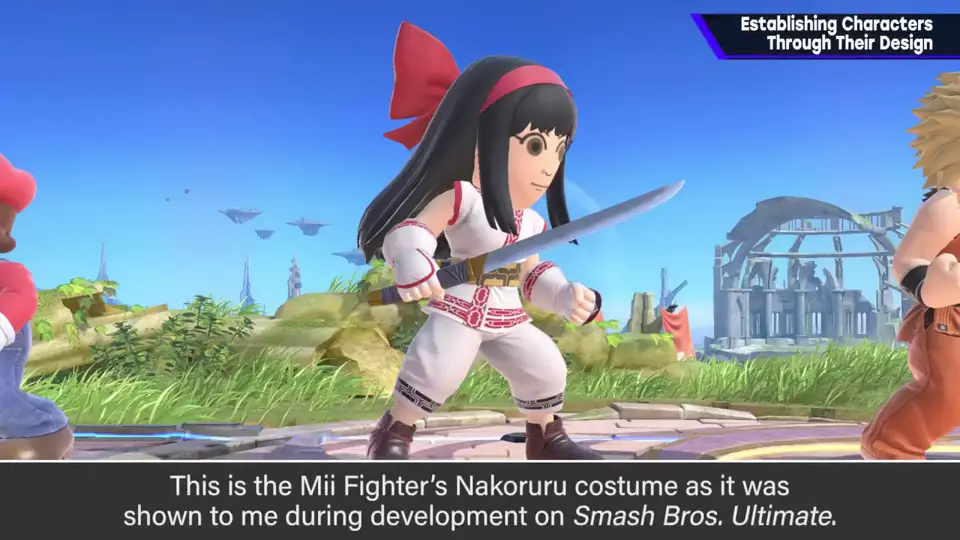
原模型是《拳皇 XIV》中的娜可露露，倒也没错。但他请人重做，变成了这样——说到娜可露露，果然是这个。
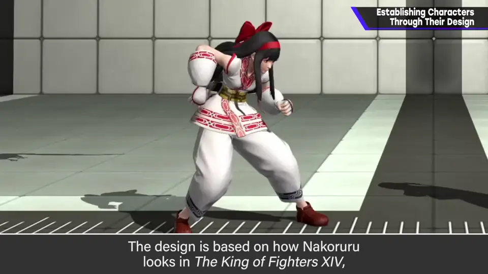
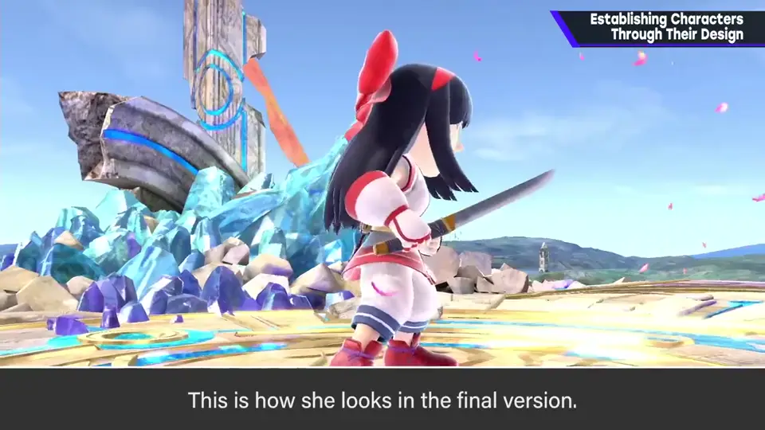
2. 《侍魂》的形体 0:49
娜可露露是 1993 年《侍魂》登场的角色，当年非常受欢迎，也能理解：这种变形和张弛分明的形体，头发与发带、手套、腿部的变形相当好。
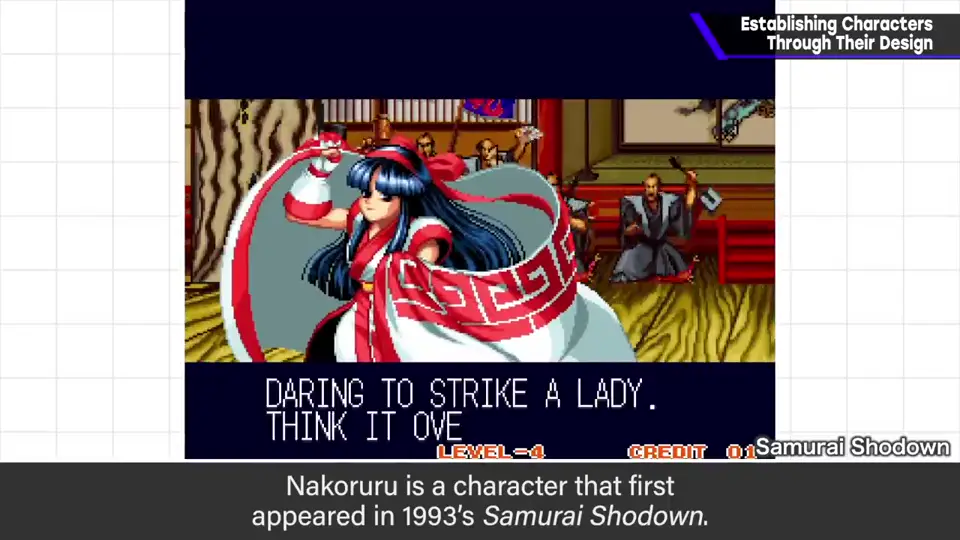
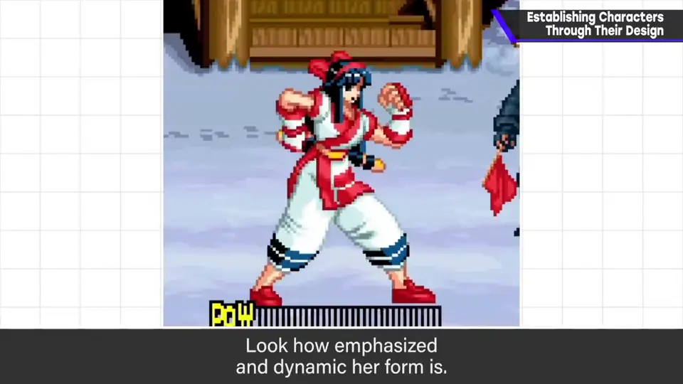
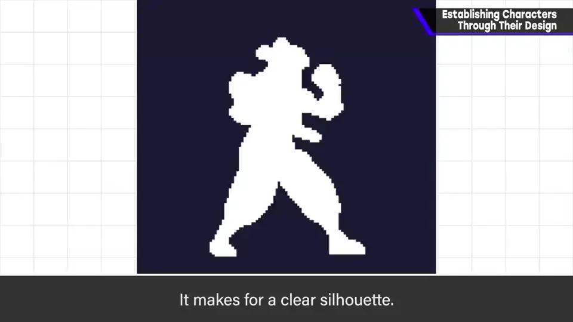
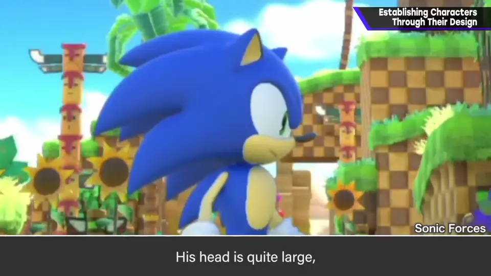
其实和索尼克等的变形感很接近：头部体量大，手脚本身细但做了足够的强调，可以说纯粹是角色立起来了。
3. 剪影最重要 1:28
让想象中的画显得帅的秘诀是什么？他知道各种手法，但不认为能解释「为什么」。
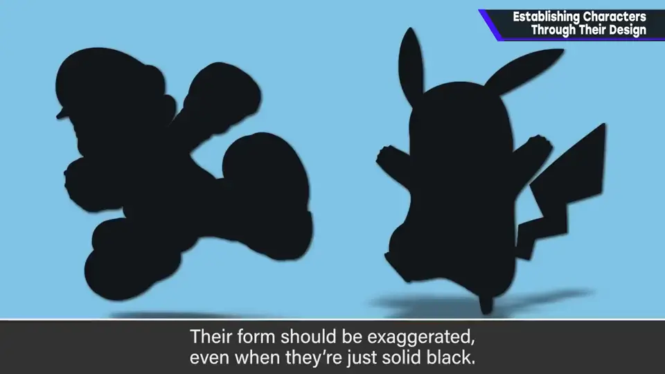
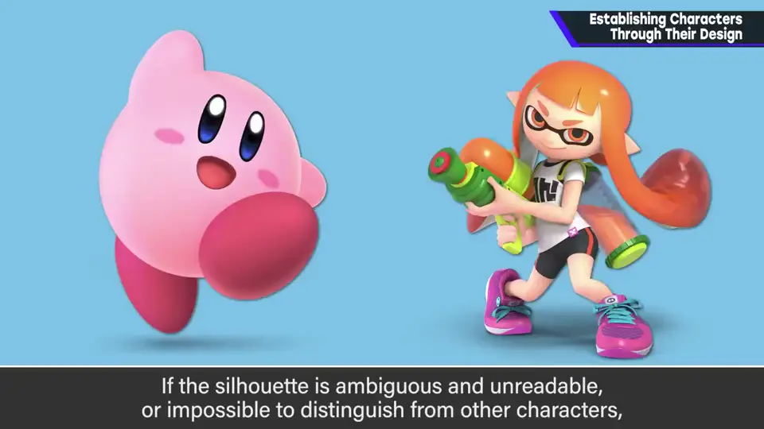
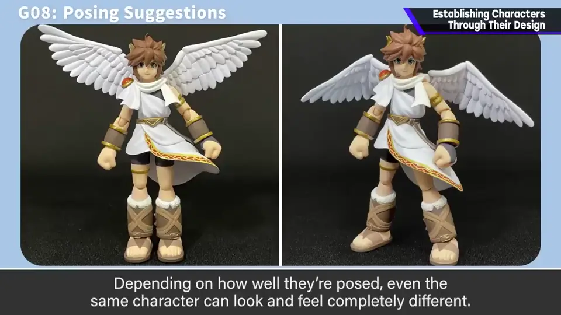
姿势也一样：即使是同一角色，按擅长姿势的倾向，看法和感受也会大不相同。
4. 全员一起立住角色 2:13
做什么都应时刻意识「角色是否立住」：各负责人理解其背景，再把它磨得更尖锐。
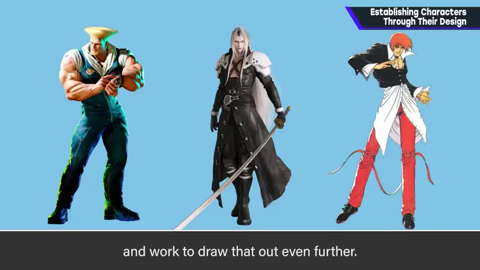
自测题
1. 娜可露露的完成版和《KOF XIV》版有什么关系？
回到经典形象，但保留了红色部分的新花纹等长处。 0:40
2. 樱井立住角色时最重视什么？
剪影：涂黑也要夸张分明、可辨识、能与他人区分。 1:40
3. 《侍魂》角色的形体有什么特点？
头部体量大、手脚细却强调到位，变形与张弛出色，与索尼克相近。 0:55